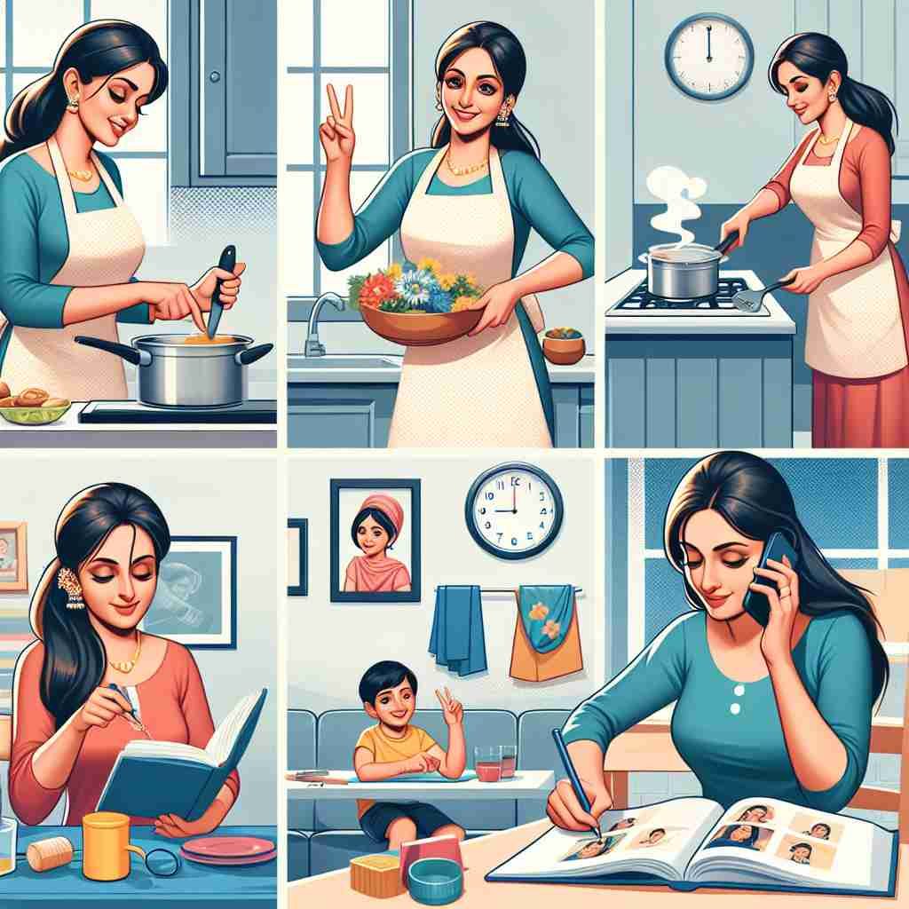

💬 The housewife cooking dinner is busy preparing a meal for her family. 正在做晚餐的家庭主妇忙着为家人准备一顿饭。

💬 She is a busy housewife who prepares meals and takes care of her children. 她是一位忙碌的家庭主妇，负责准备餐食和照顾孩子。
💬 The housewife cooking dinner is busy preparing a meal for her family. 正在做晚餐的家庭主妇忙着为家人准备一顿饭。
💬 She is a busy housewife who prepares meals and takes care of her children. 她是一位忙碌的家庭主妇，负责准备餐食和照顾孩子。
🧠 理解'housewife'的关键在于其核心含义：管理家庭的女性。从这个核心概念出发，我们可以联想到与家庭主妇相关的工具（缝纫包）和传统形象。记忆时，可以想象一位女性在家中忙碌的场景，她可能正在使用缝纫包，这个画面既包含了词的字面意思，也暗示了其引申含义。
🔈 ['haʊswaɪf]
🗝️ n. a woman who manages her own household as her main occupation 一位将管理自己家庭作为主要职业的女性
🎭 在一个温馨的家庭里，Lily 正为家人准备晚餐。厨房里飘来阵阵香气，她细心地为每一道菜调味，并摆上餐桌。她还照顾着花园、整理家务，将家庭管理得井井有条，展示了 'housewife' 作为家庭全职管理者的角色。
💬 She decided to be a full-time housewife after having children. 她决定在生完孩子后成为全职太太。
🌳 由词根 "house"（房子）和 "wife"（妻子）组成，表示一个在家中管理家务的妻子或女性。
💡 记忆 "housewife" 时，可以通过联想 "house" 和 "wife" 的结合，想象一位在家处理日常事务的妻子。
🗝️ n. a small sewing kit for minor repairs 一个小型缝纫工具包用于小修小补
🎭 在一个温暖的客厅里，Emma 坐在沙发上，拿出一个小巧的缝纫包。这是她的 'housewife'。她细心地用针线为孩子缝补破损的毛衣，展示了 'housewife' 作为缝纫修理的小工具包的含义。
💬 She always carries a housewife in her bag for emergencies. 她包里总是带着一位家庭主妇以备不时之需。
🤔 源于家庭主妇经常需要进行小型缝补，这种工具包被视为家庭主妇的必备物品
🗝️ n. a woman who is considered to be traditional or old-fashioned 被认为是传统或过时的女性
🎭 在一个充满复古装饰的茶会中，朋友们聚在一起。Mary 穿着传统服饰，分享着她的烹饪和编织技巧。她的话语中透出对过去时代的怀念，展现了 'housewife' 作为具有传统或老式风格的女性角色。
💬 Her views on gender roles are quite housewife-ish. 她对性别角色的看法相当偏向于家庭主妇。
🤔 基于传统观念中家庭主妇的形象，引申出对保守或传统女性的描述